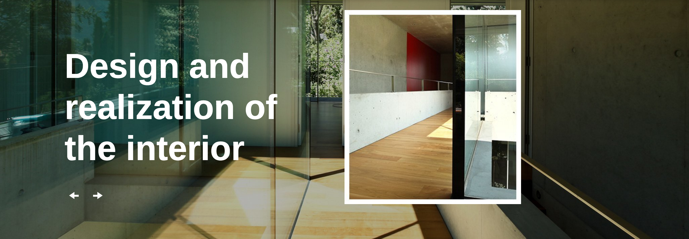

Drop-down Navigation

What I hope to practice/learn:
My main problem with drop-down navigations is styling(CSS). I can get everything to work fine, but when I start playing with positioning
I encounter problems. With this component I hope to polish the structure of my HTML and CSS on a drop-down navigation.
How this relates to what I have/will learn in WDD?
In our previous class, we learned how to use Jquery to make drop-down navigations. In WDD navigation bars are a center piece because they are the way people
get around your website. Almost every website that we will work on will how a navigation list in one way or another.
How might I build this:
<<<<<<< HEAD
<<<<<<< HEAD
=======
<<<<<<< HEAD
- 1Header
<header> contains a <nav> with an <a> that has an <img> and a <ul> with five <li> items
- 2Each
<li> item contains an <a> to corresponding areas
=======
<<<<<<< HEAD
- 1
- 2Navigation
<nav> containing a <ul> with five <li>, each containing an <a>
- 3Company branding established with
<h1> and a <p> element with styling.
- 4Drop-down menu items will be nested
<ul> inside of corresponding <li>
=======
>>>>>>> parent of 3f9994e... dd
=======
>>>>>>> parent of aa2df3a... Merge remote-tracking branch 'origin/gh-pages' into gh-pages
1Navigation <nav> containing a <ul> with four <li>, each containing an <a> and <img>
2Company branding established by <img> or <p> element with styling.
3Drop-down menu items will be nested <ul> inside of corresponding <li>
Live Example
Slider

What I hope to practice/learn:
Sliders have always gotten me frustrated and I always end up moving on to something else. With this component, I hope to force myself
into learning something I should have before. Not only that, but it will bring knowledge that will lead to functionality in more advanced components(like a video slider).
How this relates to what I have/will learn in WDD?
WWD is all about keeping up to date with the latest trends and technology. Sliders are a great way to make
a page look unique and save space. This is a stepping stone to other components that I want to make, by learning this, not only will I learn to make
a slider, but other components that are similar.
How might I build this:
- 1Create the component as a
<section>
- 2Add a
<div> for each video and each <h1-h3> or <p>
- 3Buttons are
<ul> with five <img> with <a>
Live Example
Responsive Features List

What I hope to practice/learn:
Features lists are very common in the WWD world. With this component I hope to learn how to make more complex
featured lists that are responsive.
How this relates to what I have/will learn in WDD?
I have made this component before with BootStrap, but I want to learn how to do it from scratch.
How might I build this:
- 1Create
<section> with <ol>
- 2Add five
<li> each with an <article>
- 3
<article> contains two <figure>
- 4One
<figure> contains background <img>
- 5Second
<figure> contains <img> and <ul> with two <li>
Live Example
Featured Component
Video CTA
What I hope to practice/learn:
Call to actions are important to websites that want to draw attention to certain offers or interactions. I hope to learn
how to use HTML5 to make a video CTA, which will draw more attention than an ordinary CTA.
How this relates to what I have/will learn in WDD?
We have learned how to make CTA's through photoshop/illustrator in previous classes. With the understanding of the use
and functionality of CTA's I want to learn how to really draw attention my having a video CTA.
How might I build this:
- 1Create component in a
<section>
- 2Section title using
<h1> or <h2>
- 3For each testimonial add an
<article>
- 4Quote
<blockquote> containing a <p>
- 5Details establishing both name
<h3> and location <p>
- 6Pagination created via
<ul> containing three <li>
- 7Each pagination
<li> showcases the author <img>
Live Example
Tab Accordion

What I hope to practice/learn:
I have always loved how tabbed accordions can make a website save space and give it great functionality.
With this component I will learn how to make one of the components that I find most important for mobile designs.
How this relates to what I have/will learn in WDD?
I had a similar experience with the responsive features list and this component. I learned how to make them, but not how I wanted to.
I have learned how to make this before, but I want to learn how to make it from scratch and styled correctly.
How might I build this:
- 1Create
<section> with four <label>
- 2Add four
<la> and four <article>
- 3
<la> will hold tab and <article> the content
Live Example